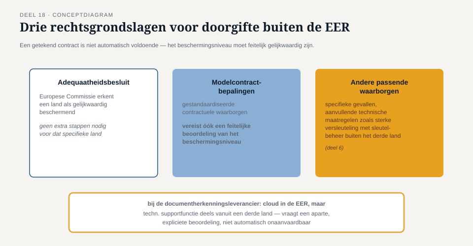
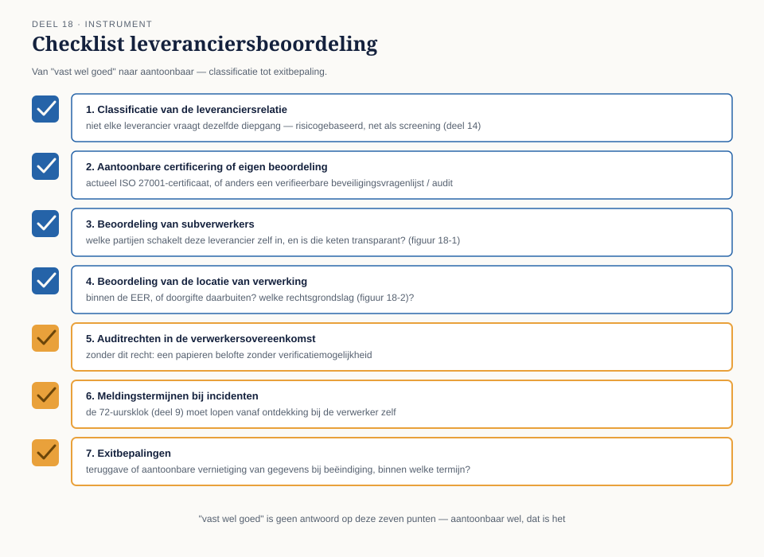

Deel 18 — Leveranciers en de keten
Slidedeck · Ductus-cursus Informatiebeveiliging en privacy · niveau 2 · deel 18 van 22 · 22 slides
Slide 1 — Titel
Informatiebeveiliging en Privacy
Deel 18 · Niveau 2 · Professional
Leveranciers en de keten
Slide 2 — "Vast wel goed"
Tarik wil een externe partij voor documentherkenning.
"Ik heb er eerder mee gewerkt. Dat zit vast wel goed."
Slide 3 — De tegenvraag
Merel en Sanne: "Vast wel — of aantoonbaar wel?"
Slide 4 — Uitbesteden ≠ verantwoordelijkheid kwijt
Meridiaan blijft verwerkingsverantwoordelijke (deel 4).
Uitvoering delegeren ≠ verantwoordelijkheid delegeren.
Slide 5 — Terug naar deel 12
"Overdragen" verplaatst de last.
Niet de AVG-verantwoordelijkheid.
Slide 6 — Opdracht 18.1
Waarom is "we hebben het uitbesteed" geen verweer?
Slide 7 — Leveranciersbeoordeling: vier stappen
- Classificatie van de relatie
- Certificering of eigen beoordeling
- Subverwerkers in kaart
- Locatie van verwerking
Slide 8 — Risicogebaseerd, net als deel 14
Kantoorbenodigdheden: lichte beoordeling.
Volledige hosting van de deelnemersadministratie: uitgebreid.
Slide 9 — Opdracht 18.2
Drie leveranciersrelaties. Licht of uitgebreid?
PAUZE
Slide 10 — Subverwerkers

Een verwerker die zelf weer een partij inschakelt.
Eerder regel dan uitzondering.
Slide 11 — De keten mag niet verwateren
Dezelfde verplichtingen die gelden tussen Meridiaan en de hoofdverwerker
moeten ook gelden verderop in de keten.
Slide 12 — Opdracht 18.3
EER-eis in het contract. Subverwerker buiten de EER.
Wat had er moeten staan?
Slide 13 — Doorgifte buiten de EER

Adequaatheidsbesluit · Modelcontractbepalingen · Andere passende waarborgen
Slide 14 — Contract getekend ≠ klaar
Modelcontractbepalingen alleen zijn niet automatisch voldoende.
Slide 15 — Wat ook nodig is
Feitelijke beoordeling: is het beschermingsniveau écht gelijkwaardig?
Zo nodig: aanvullende technische maatregelen (versleuteling, deel 6).
Slide 16 — Terug naar de rode draad
Contract = aanwezig.
Feitelijke beoordeling = pas dan aantoonbaar werkend.
Slide 17 — Opdracht 18.4
Modelcontractbepalingen getekend. Automatisch AVG-conform?
Slide 18 — De verwerkersovereenkomst: drie vergeten elementen

Auditrechten · Meldingstermijnen · Exitbepalingen
Slide 19 — Waarom meldingstermijnen cruciaal zijn
Meridiaans eigen 72-uursklok (deel 9)
moet lopen vanaf ontdekking bij de verwerker —
niet vanaf wanneer de verwerker toevallig meldt.
Slide 20 — Opdracht 18.5
Drie ontbrekende elementen. Wat gaat er mis zonder elk ervan?
Slide 21 — Terug naar Tarik
Classificatie · certificaat · subverwerkersketen ·
EER-beoordeling · complete overeenkomst.
Meer werk dan "vast wel". Maar aantoonbaar.
Slide 22 — Vooruitblik
Deel 19: incidentmanagement en crisis —
het datalek in het Mutatieplatform (twee dagdelen)